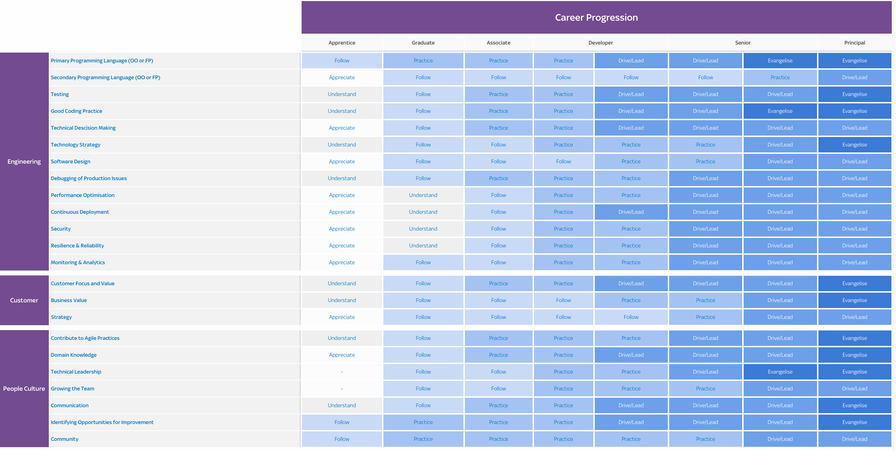
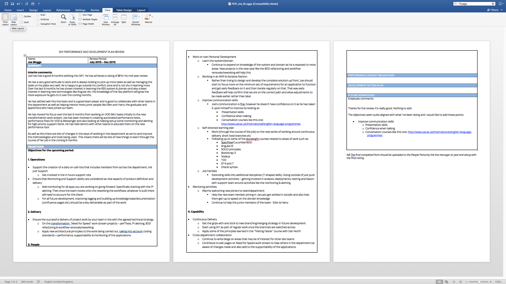
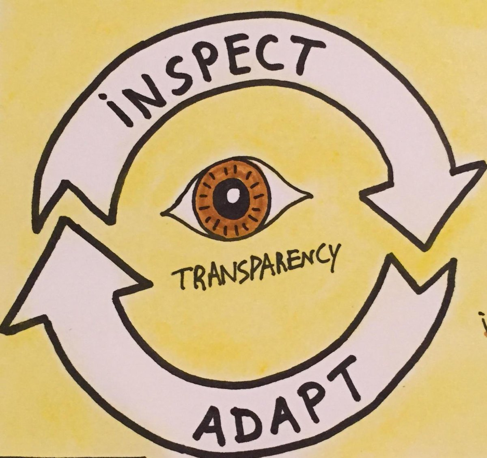
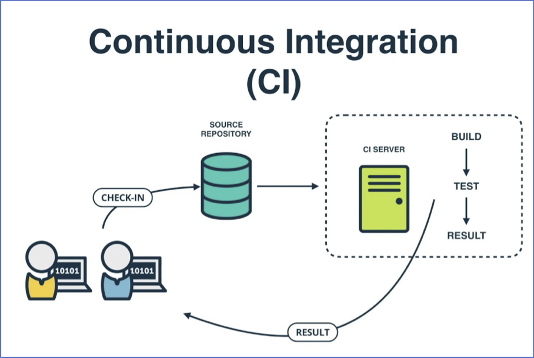
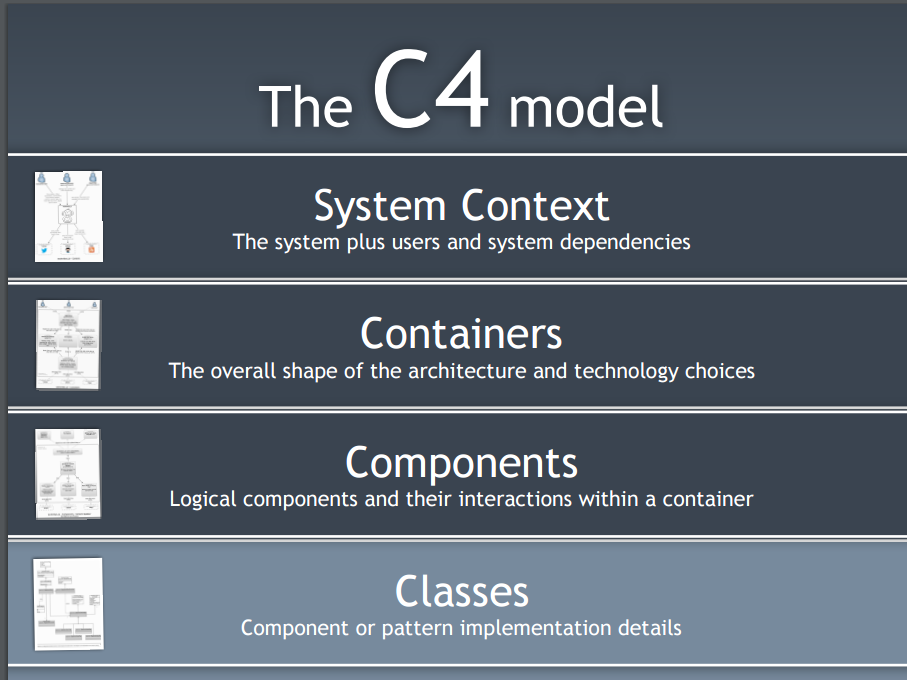
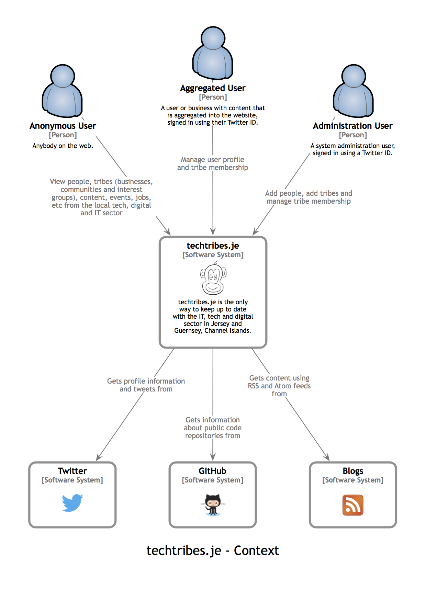
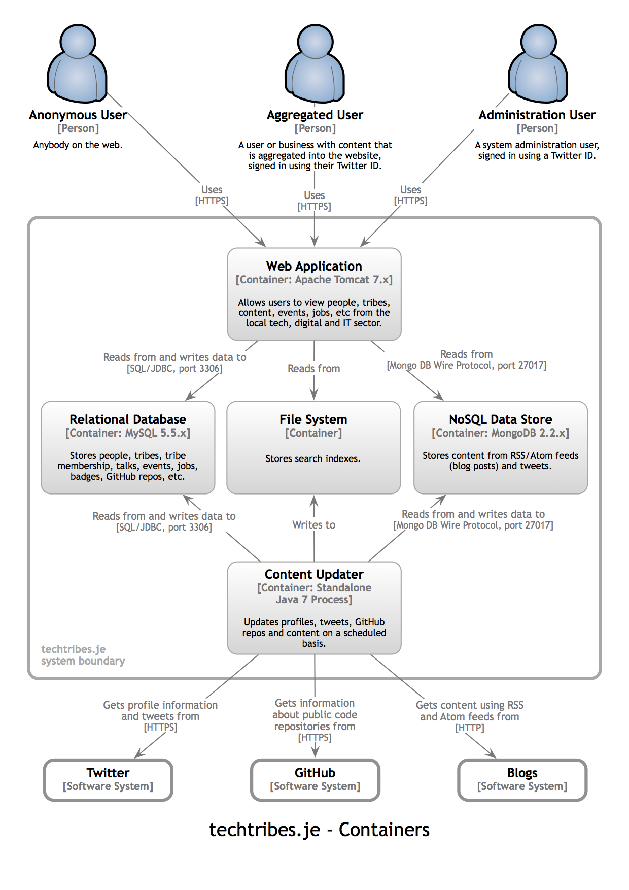
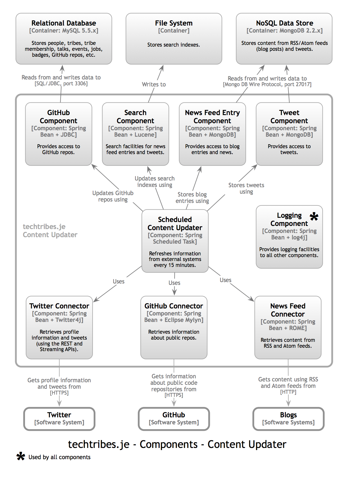

Seán Mulcahy BlogSome ramblings
Turning a team around
Situation:
One of the teams I took over had very low morale. This due to lots of reasons, here are some of them:
- Disgruntled employees unhappy with previous line manager and last set of annual appraisals
- Was told by the previous manager in the handover that a few people were likely to leave soon
- Too Much Support work and not enough new engineering / development
- Architects Silo - handed off projects late in the decision-making process
- High ratio of contractors to permanent staff in the team
Task:
Try and keep the team together and motivated, stable and avoid having too much of a brain drain at the same time. All while delivering important projects for the company.
What did I do?
Here are some of the things that I did to try and improve the situation. Most of it is probably common sense but for some reason it wasn't done previously. Lots of simple changes had an overall positive impact.
Line management
Actions:
- Held more regular one to ones
- Gave everyone a blank slate, whatever issues individuals had with previous manager would be put to one side (he said / she said), would be judged on what I saw of them from that point on
- Over first few months tried to get to know the team members and what motivated them
- Some wanted more money, some wanted more interesting work, some wanted more feedback in 1 on 1's
- Told them we can only control the controllables, what do we have control of within the team to change
- Focus on individuals and their career progression. Set goals for people to achieve within the team and if they succeeded in those then they would warrant good appraisals and from there may come good financial reward or promotion etc. depending on budget. Also set technical goals for areas to improve on with a long-term aim of promotion to next level.
- Succession planning: recruit more permanent staff with a longer-term goal of training them up and having them in place if people were to leave over time.
- Let go of some long-standing contractors.
Results:
- Team happier that more focus was put on them as individuals, their concerns and their career progression
- Team morale improved
- Peoples Objectives set and also where appropriate aligned with team delivery gave clearer focus on what they had to do to progress
- Contractors leaving helped give more ownership and responsibility to the permanent employees and allowed room for some of them to step up and fill the knowledge, experience and leadership void by those who left. This extra exposure helped them take steps forwards in their career progression where some of them were promoted to Senior Developers for example
Support
Actions:
- Introduced Support Rota & new support process with priority being paramount
- Setup Kanban JIRA project for other teams to raise tickets and have visibility of them and what they are competing against in terms of priorities
- Support Tool created to better track the status of assets
- Team took feedback from support users and other teams on requirements to improve this app
- Put a tax on new projects to allow money and time to be spent on this new support process
Results:
- A well-defined support process for other teams to follow, rather than the adhoc methods used before
- Less context switching between support admin, checking email, and doing feature work. Pair dedicated to support each day. Rest of team could concentrate on the feature work.
- Better team efficiency as a result
- Priority support items were addressed in an appropriate time frame
- More visibility and better comms around where support issues were at, therefore reduced emails and chasing from other teams
- Happier team
Architecture
Actions:
- Weekly Architects meetings to discuss questions on current work and also an introduction to upcoming projects or changes, that the team could feed ideas back for
- Team took control of the architectural tools /documentation (API definitions, descriptions on the mappings of outputs to the inputs) for their team and application
Results:
- More ownership of the product / application
- Better understanding of the requested changes and requirements as a result of the increased comms with architects
- Better working relationship with the architects
- Ended up with a more resilient and supportable application
- Ownership and version control of the mapping documentation & APIs so that the team could publish what version was live and what was future 'to be state versions
Engineering
Actions:
- I got the team to identify what technical debt / architectural changes to the app they would make to make it more supportable and resilient.
- Set up 'theme of the month' to focus entire team on one theme goal for the month from the technical backlog.
- Set up monitoring dashboards and alerting stack using Prometheus/Grafana
Results:
- This generated a backlog of work (like performance improvements, CI/CD pipeline improvements, monitoring and alerting etc.) to improve the application and setup.
- The team had ownership of this work as they had come up with it and were passionate about it
- the theme of the month helped everyone work on the same thing, gaining momentum and meant there was a decent amount to showcase at the end of the month from the fruits of their labour
- Team became proactive rather than reactive in terms of up issues being raised from the alerts
Making Culture Change
Situation:
Task:
Action:
Results:
How do you make culture and attitude change at a department level?
A few years ago we started this process in the department I was in. It was an old school mentality department with more of a waterfall non agile mindset by the people running it and also from the developers on the ground. Releases were 'Big Bang' project releases every quarter (at best), which had major months long test phases running up to them. Small but important changes or simple bug fixes got held up and had to wait on the release train. A lot of the time these changes not only didn't make it into the next release but the release after that, as code was locked down for this rigorous manually testing phase. Even still most releases had serious bugs in them. Multiple major branches had to be maintained and merging was big ordeal because of all this causing more bugs as this happened after all the testing on the project branch.
Work was siloed and the development teams only cared about the project they were working on. A dedicated support team managed support of the production system. The did lots of fire fighting and quenched lots of fires. It was a bit of a hero mentality. Because of the silo the development team weren't involved in investigating root cause for these production issues, most of them didn't even have access to production. Because of this environment developers never learned from these prod incidents and instead of engineering an application to avoid pitfalls learned from previous experiences or issues the same basic issues cropped up over and over again. A simple example of this was that data changes would constantly be applied on production rather than fixing
- Siloed work between dev and support
- support heroes quenching fires rather than the teams building the apps stopping the fires happening in the first place
- no real agile culture, monolith application
- lots of contracts v permies, people who have seen people try to make changes / transform change before and failed and are resistant
- use some projects as example projects to show how changes can be releases faster
resistance to change - get a key group to drive the change and identify people within the teams who will help to get the teams to adopt the changes.
Results: Teams assigned ownership of applications. Takes time, long game
Kind of similar process to defining Department Values. For buy-in you’d need a lot of people to buy into it and a good way to do that is to involve them in coming up with a process like below. As discussed probably a cross over between some of the below themes and some of the people survey initiatives going on currently.
Managed to find the old confluence pages for this. The 2 main ones being: http://confluence.bse.intranet.sky:8090/display/WW/Software+Principles which was mainly defined by the Tech people
and http://confluence.bse.intranet.sky:8090/display/WW/Continuous+Improvement with the sub-pages for the following themes:
- People
- Curate - Build the right thing
- Deliver - Build it effectively
- Code - Build the thing right
- Test
- Deploy
Here is an example of the people one:
People
We attract the best people and keep them highly engaged and motivated in a challenging and fun environment Beyond "Basic job titles" -> Job families & core competencies What is job families and core competencies? Creating a clear & consistent career progression path, to encourage personal development at Sky. Identifying a framework for people to work against to develop their skills. Beyond "Generic training courses" -> Knowledge improvement What is knowledge improvement? Increasing the team's knowledge of industry tools, methods and trends, as well as Sky & department-specific information. the better informed our people are, the better the choices they can make. Beyond "Reactive resourcing" -> Building stable capability Beyond "Reviewing CVs" -> Identifying talent Beyond "Onboarding" -> A Warm WelcomeFrom there we listed ‘What are we doing now?’ and then ‘Next Steps’ to create specific tasks to help progress towards achieving these goals.
So lots of this material won’t be relevant to the current department as believe it or not we are more progressive !
You may not have access to these old confluence pages so I have added PDFs of them.
People | Line Mgmt | Career Progression
Hardest part of being a manager?
One of the hardest thing to do as a line manager is to manage people who have character / personality things to improve on.It can be a difficult subject to broach as it can be quite personal. They may not want to acknowledge it and also it could be a long process for someone to change parts of their personality or makeup.
Two examples of this I have had to deal with have been someone who has
- Bhaavna
- Michael/Will B
Managing Gods gift
Managing Managers
- Bhaavna - SM
- Leon - SM - line mgmt, OCD
- Aasim - SM - line mgmt
- Stefanos - TL - needed to learn to delegate and trust others, did too much himself
- Panos - TL - experienced, calm, seen it all before
- Alex - TL
Progressing developers towards Senior Developer
Not just being good technically, what else do they need to do ..- Tom
- Michael
Graduates going to Developer level 1
- Ash
- Jazib
- Ellen
Apprentices completely new to technology
- Harry
- Kavita
- Tanya
- WED Club - weekly meeting to give brown bags on topics like CI/CD, Jenkins, Coding (Java, Spring), Testing (testing pyramid, unit test, Cucumber BDD, Unix, Servers, K8. Give them tasks to complete as homework
- No point pairing with Senior Developers, they'll be overwhelmed and the Senior Devs will be bored at going so slow and also might have forgotten how to explain the simple step
- Pair with someone next level up, someone who has just been through it
- For 2 of them we gave them a (non mission critical) project to pair on
- Very daunting for them, so much to learn about ways of working, coding, tools, 3 letter acronyms
- Simple objectives, small goals, learning is the main goal, soak up info, eventually they will be able to contribute
- Don't treat everyone like the old saying 'as you would like to be treated'
- Diff people are motivated differently
- guide the managers
- get them to trust and to delegate
- get them to worry about people's careers
Career progression
A company wide matrix to define ... 
Motivation
Annual Reviews

Objectives
People - WB - Learning how to do line management properly
Situation:
- Analyst on the team
- Passionate
- Understood the system very well and what needed to be changed for projects
- Major communications issues -- Way to verbose (verbally and written) and often goes off on complete tangents
- Not ideal given his role and given the level of interaction he had with the customer
- people tune out from conversations or don't read all the emails etc.
- Not able to judge the audience and tailor info differently when directed at developer or PM
- early in my managerial career
Task:
- PDP had to deliver feedback but knew he would challenge me on it
- Prepared bid PDP appraisal document listing the issues and giving examples of where he displayed those issues
- Ironically I went into great detail to point out all these issues
Results:
- Having the detail prepared worked in terms of the evidence was there so he couldn't really challenge but ended up acknowledging
- However learned from this not to keep all the feedback to end of year / 6 month appraisals
- don't leave all the bad news until the end of the year
- Better to address as you go in regular 1 to 1's where you have recent examples to point out and to allow them to correct as they go, won't be a shock at the end of the year
- 6 montly appraisals should just be a summary of all conversations throughout the year
What is Agile?

- Inspect & Adapt
- Transparency
- Lean
- Pragmatic
- Not wedded to Scrum/Kanban
- Empowering the team
- Clear direction/goals
- Inspect and Adjust
- Agile Manifesto items
- What is agile testing?
- How is agile methodology different than traditional waterfall process?
- What are pros and cons of agile methodology?
- What kind of projects is suitable for the Agile methodology?
- What are different types of agile methodologies?
- Difference between extreme programming and scrum?
- Can you explain lean methodology in detail?
- What is Kanban?
- Is there any difference between incremental and iterative development?
- What are burndown and burn-up charts in agile methodology?
- Can you explain pair programming and its benefits?
- Do you know what is the scrum of scrums?
- What is the velocity of a sprint and how it is measured?
- According to you what are some qualities that a good agile tester must have?
- Can you list some responsibilities that a scrum team have to undertake?
- How long were your sprints for the projects you have worked on?
- What kind of project management tools were used for your project?
- Have you used automated test tools earlier? How was your experience?
- Did your iterations overlap?
What is good engineering?
- CI/CD
- KISS
- Ownership - Build for longevity
CI/CD - Continuous Integration/Continuous Delivery
Continuous Integration (CI) is a development practice that requires developers to integrate code into a shared repository several times a day. Each check-in is then verified by an automated build, allowing teams to detect problems early.  By integrating regularly, you can detect errors quickly, and locate them more easily.- Maintain a single source repository
- (Encourages) frequent commits
- Automate the build
- Make your build self-testing
- Fail fast
- Every commit should build on an integration machine
- Safe rollback option
- Snapshot deployments - Make it easy for anyone to get the latest executable version
- Automate deployment
- Build only once, deploy multiple times
Continuous Deployment
Continuous Deployment is closely related to Continuous Integration and refers to the release into production of software that passes the automated tests - Essentially, it is the practice of releasing every good build to users, ideally multiple times a day.Visualising Software Architecture
A few of us attended a course on ‘The Art of Visualising Software Architecture’ which was run by Simon Brown.
The main points we learnt was about visualising the architecture of a system by:
- not trying to fit everything on the one diagram!
- use of a consistent style/standard to be used in the diagrams
- use different levels to drill into the right amount of detail - a bit like google maps
A lot of this is common sense but we don't end up doing it!
The C4 Model:
Uses 4 levels
Good examples of the first 3 levels were in the example Simon provided for one of his old now defunct websites (techtribed.je):
System context
Containers
Components
Drill down to one of those containers - Content updater
Exercise
Before:
Before we learned how to do it properly we split into groups and made an attempt to come up with diagrams of a system. In our case we focussed on the ADI Builder as part of Messenger.
After:
After learning some tips about the C4 model:
Results/Conclusions:
The results were much better! We took an action to create C4 diagrams for applications within the department. We ended up with consistent diagrams that everyone could understand and reason about. We then used these diagrams to illustrate proposed architectural changes through projects or rework. It proved extremely useful for example in refactoring some of the applications, helping us decide how to separate & group things more logically.
Info & references:
- Cliff Notes
- c4model.com
- The course content is based on the freely available book - leanpub.com/visualising-software-architecture